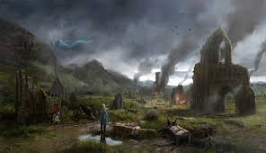
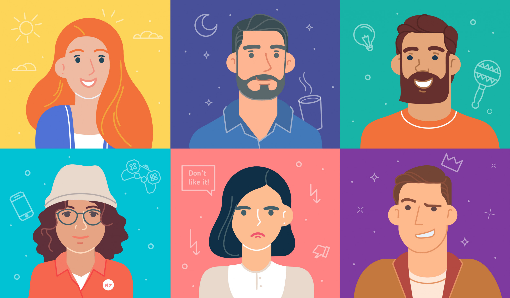
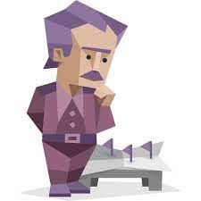

BIENVENIDOS

Ivan Adrian Romero Vazquez
Dentro de esta sección veras algunos temas relacionados a mi persona, asi como mis gustos, es decir aquellos temas que se me hacen de interes y que me agrade hablar junto con las personas que me rodean, tambien conoceras de mis experiencias y mis logros a lo largo de mi vida, claro no hablare de algunas cosas ya que ciertas caracteristicas se hablaran dentro de mi
"Curriculum Vitae".
En esta pagina tambien veras cosas relacionadas de mi forma de ser, es decir, como me relaciono con las personas que me roden y como interactuo con ellas, veras mi tipo de personalidad, mis caracteristicas y me conoceras fisicamente.
Si deseas conocer mas de mis proyectos o conocer las diversas paginas web que he creado te recomiendo que le des click a los enlaces de la *Barra de Navegacion* que se encuentran en la parte superior de esta pagina web.
Mis Gustos

Soy una persona que le gusta diversas cosas, un ejemplo de esto es que soy amante de los animales, no me importa si son vacas, caballos, serpientes, iguanas, perros, gatos, conejos, los animales me encantan demasiado de hecho antes de meterme a diseño grafico yo pensaba ser Biologo o Zoologo, ya que ningun animal me ocasiona miedo.

Otra cosa que me gusta es todo tema relacionado con la fantasia y la edad medieval, aquello que tenga que ver con caballeros, reynos, magos, pociones, magia, dragones, paisajes de fantasia que sean creados a partir de dicha edad y en las cuales se pueda demostrar la variedad de historias ficticias que se puedan crear de aquellas epocas, entre varias cosas.

Por ultimo y no lo menos importante, me gusta la creacion de personajes de como cada persona puede crear un ser iconico y original que sea inventado en la mente de cada persona, los videojuegos porque a apartir de ellos puedes vivir un monton de experinecias en mundos diferentes, el dibujo y la pintura porque a partir de ellos puedes crear aquello que se encuentra en tu mente y puedes liberar o dar a la luz en la vida real.

Mi personalidad

Voy a basar la informacion que agrego a esta seccion apartir de un test de personalidad que realize hace algun tiempo, y menciono que yo tengo personalidad de INTJ-A (Arquitecto).
La cima puede ser solitaria. Los Arquitectos (INTJ), uno de los tipos de personalidad menos comunes y más capaces, lo saben muy bien. Los Arquitectos, racionales e inteligentes, se enorgullecen de su capacidad para pensar por sí mismos, por no mencionar su asombrosa habilidad para ver a través de la falsedad y la hipocresía. Pero como sus mentes nunca descansan, a los Arquitectos les puede costar encontrar personas que puedan seguirles el ritmo con su análisis incesante de todo lo que les rodea.
Los Arquitectos lo cuestionan todo. Muchos tipos de personalidad confían en el statu quo, en la sabiduría convencional y en la experiencia de otras personas para guiar sus vidas. Pero los Arquitectos, siempre escépticos, prefieren hacer sus propios descubrimientos. En su búsqueda de mejores formas de hacer las cosas, no temen saltarse las normas ni arriesgarse a ser desaprobados; de hecho, disfrutan con ello.
Este tipo de personalidad viene acompañado de una fuerte vena independiente. A los Arquitectos no les importa actuar solos, quizá porque no les gusta esperar a que los demás se pongan a su altura. También suelen preferir tomar decisiones sin pedir la opinión de nadie. A veces, este comportamiento de lobo solitario puede parecer insensible, ya que no tiene en cuenta los pensamientos, deseos y planes de los demás.

Mi apariencia
Ahora hablare de mis caracteristicas de forma fisica, es decir, el como me veo, primero soy una persona con complexion Endomorfo es decir personas que tienen problemas para perder grasa, llegan a ganar musculatura con facilidad y un metabolismo lento, son personas que regularmente tienen sobrepeso, y su estructura es grande.
Tengo el cabello negro, entre rizo y ondulado como si fuera crespo, pero entre mas largo tengo el cabello mas ondulado se me va poniendo.
Mis ojos son cafes oscuros, tipo asiaticos.
Mi nariz es chata por lo que yo tengo entendido. Mi boca es de labios grueso casi llenos. Actualmente tengo barba corta cuadrada y bigote.